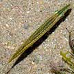
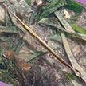

Barracuda (juvenile)
Family Sphyraenidae |
|
|
|
|
| 5-8cm.
Body short and cylindrical with regular pale bars. Both jaws about
the same length, a forked tail. Reefs and seagrasses near reefs. Sometimes
seen on some of our shores. |
|
2-3cm.
Lower jaw short, broader at the tip. Seagrasses. Sometimes seen on
our Southern shores. |
10-15cm.
Lower jaw short with reddish tip.Coral rubble and near reefs. Sometimes
seen on some of our shores. |
20-40cm.
Body fat with 3 to 9 short black bars on the sides. Lower jaw very
long compared to the body. Sometimes seen near reefs. |
|
|
|
|
|
| 6-8cm,
grows to about 23cm. Long pointed lower jaw. Mangroves, near jetties.
Commonly seen in Sungei Buloh. |
6-8cm.
Lower jaw long, broad. Tail fin not forked. Seagrasses, coral rubble,
reefs. Commonly seen on our many of shores. |
6-10cm.
Lower jaw long, tapers to a point. Seagrasses. Common on our many
of shores. |
|
50cm-1m.
Much larger than halfbeaks. Silvery. Upper and lower jaws the same
length. Mangroves, near jetties, also on other shores. Sometimes seen on some of our shores. |
|
|

Razorfishes
Family Centriscidae |
|
|
|
| Up
15cm, hangs vertically but can swim horizontally. Coral rubble, seagrasses,
lagoons near living reefs. Sometimes seen on our Southern shores. |
Up
15cm, hangs vertically but can swim horizontally. Coral rubble, seagrasses,
lagoons near living reefs. Sometimes seen on our Southern shores. |
To
35cm. Long narrow body flattened sideways, long tail fin, tiny upturned mouth,
barbel under the chin. Rarely seen. |
|
8-10cm.
Long slender body, pointed snout. Hides in sandy areas near reefs.
Sometimes seen on our Southern shores. |
|
|
|
|
|
|
| 8-10cm.
Various colours and patterns. Usually motionless among seagrases and
seaweeds. Commonly seen on our Northern shores at certain times. |
20cm,
grows to about 29cm. Large and long. Seagrasses. Seen once at Pulau
Semakau. |
|
|
|